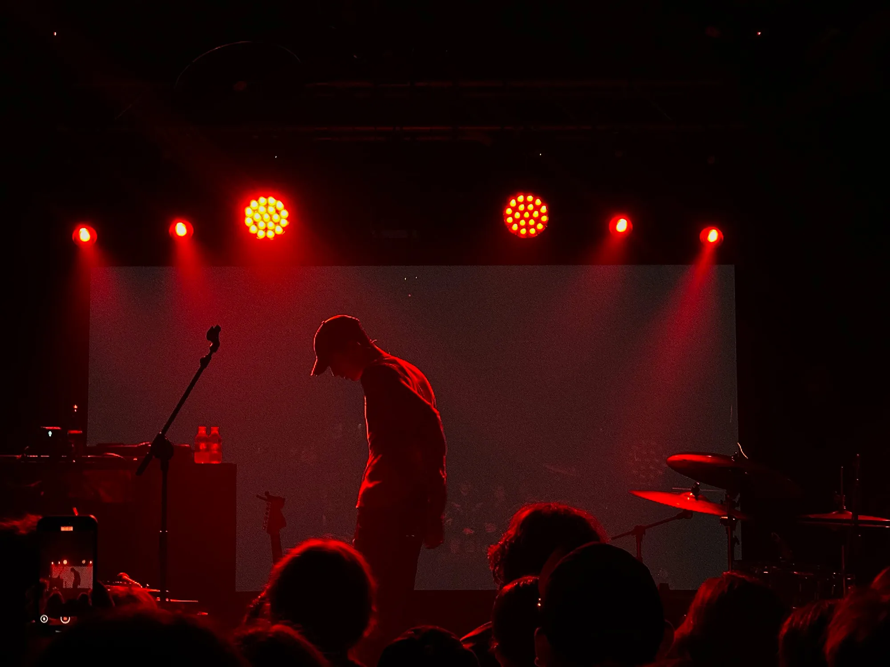
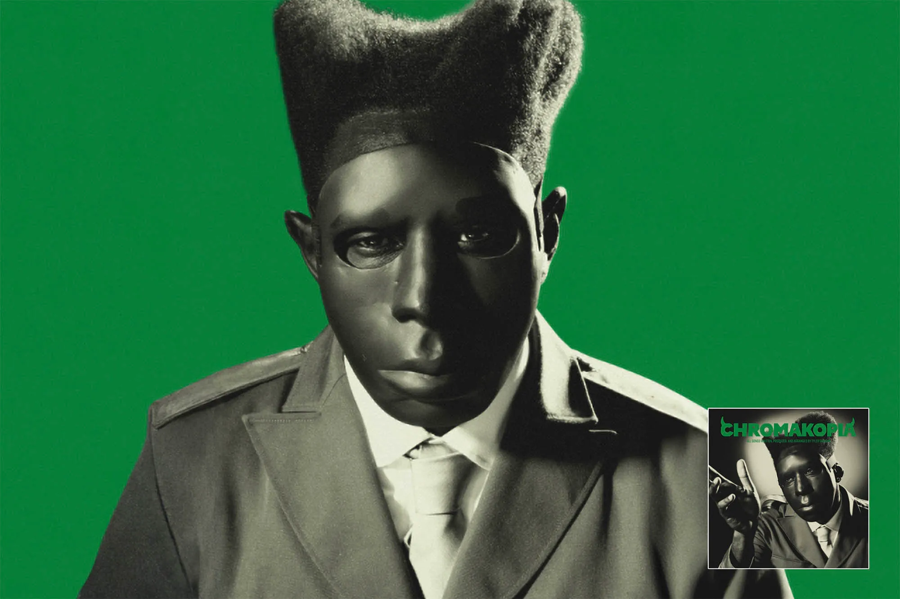
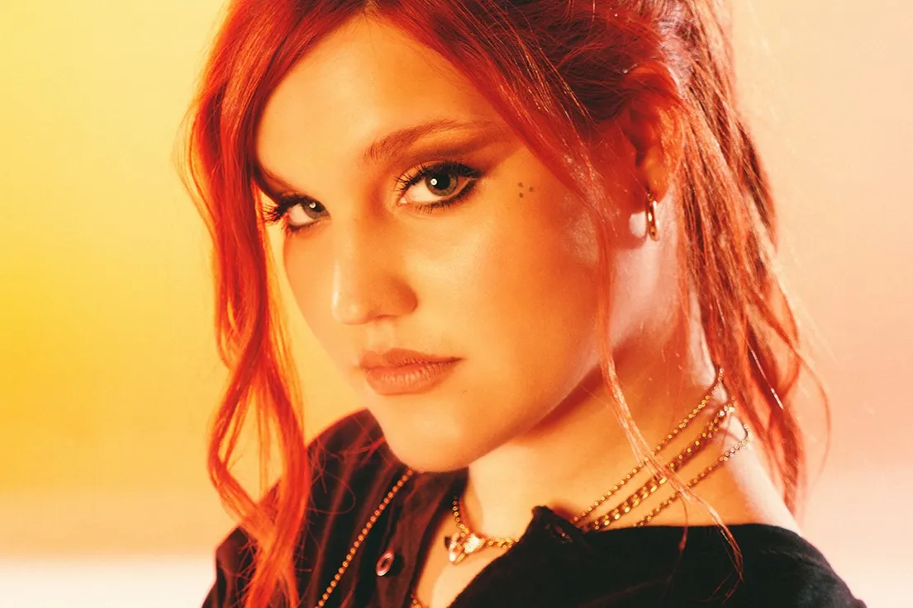

CONCIERTO DE DEI V EN MADRID
Hace pocos días y como calentamiento previo a la gala de LOS40 Music Awards Santander Solidarios, el artista anunciaba un show íntimo en La Riviera. Los seguidores del puertorriqueño recibieron la noticia con emoción. Tanto fue así que, pocos días antes del evento, colgaba el cartel de entradas agotadas. Durante las horas previas al comienzo del espectáculo, una extensa cola se hacía presente en toda la calle. De hecho, esto se mantuvo hasta prácticamente la hora de comienzo. En el interior de la sala, el ambiente no paraba de crecer gracias al DJ que se encargaba de entretener al público hasta que Dei V apareciese sobre el escenario. La emoción se notaba cada vez más y, finalmente, a las 21:30, dio comienzo su tan esperado show. No podía empezar el concierto con otra canción que no fuese con la que da título a su último álbum de estudio. *Quien es Dei V* empezó a sonar y toda la audiencia allí presente levantó su teléfono para conservar, de alguna forma, el momento tan especial. El artista, con chaqueta, gorra y gafas de sol incluidas, se subió al escenario para demostrar, durante la hora que duró el show, por qué es uno de los artistas del género urbano que más ha crecido en los últimos años.

"Todo el mundo con la mano arriba.", gritaba a su maravilloso público. *Los Que son* y *Diamonds* llegaron después. De nuevo, Dei V alentó a la audiencia para dejarse la voz y toda su energía esa noche: "Madrid. Una buya que se sienta. Estamos activos", comentaba frente al micrófono. Se trataba de una de las primeras presentaciones en solitario del artista en la capital y la energía de la audiencia en la sala era una prueba de ello. Aunque el comienzo fue de lo más eufórico, la emoción continuó igual de alta durante los siguientes minutos. *VVS* y *Matricula* fueron las siguientes canciones incluidas en el setlist. Un agradecimiento para todos aquellos seguidores que apoyan al artista desde sus inicios. De hecho, el propio protagonista lo comentó en varias ocasiones a lo largo del show: "Para toda esa gente que me escucha desde el día 0", declaraba.
Tras los grandes éxitos mencionados, era la hora de *LOS MARCIANOS Vol.1*. *Barbie* y *Perreo Lento* fueron las elegidas, de nuevo, coreadas de principio a fin por el público. El concierto continuó con canciones como *SI SI SI SI*, *TU$$I* y *CLIMA*. Ninguno sabía realmente cuál era la canción que vendría a continuación y eso solo aumentaba la intriga entre el púbico. Otros grandes himnos de la carrera del protagonista fueron cantadas poco después. Las primeras melodías de *Trending* se hicieron presentes y, de nuevo, los móviles se visualizaron en toda la sala. El propio Dei V fue consciente de ello y se encargó de coger algunos para grabarse junto a sus seguidores.

No es el único momento dedicado a la audiencia. Tras otras tantas canciones como *58*, *GATITA GANGSTER* o *Rápido*, un grupo de jóvenes fanáticos se subían sobre el escenario para cantar junto al artista. No sin antes avisar de que debían ser verdaderos fanáticos: "Si no se la saben van para abajo de una", bromeaba. Una de las seguidoras no pudo contener las lágrimas tras abrazar a su ídolo. Gesto que fue recibido por parte de Dei V con ternura.
Por si no hubieran sido suficientes éxitos a lo largo del show, el puertorriqueño no podía olvidarse de *BAD GYAL*, quizá la más especial. Aunque Saiko y JC Reyes no le acompañaron sobre el escenario, tan solo hizo falta ver como los gritos de la audiencia superaban a la voz del artista para saber que todo el que se encontraba allí presente se sabía la canción de principio a fin.
Poco antes de desaparecer, Dei V quiso dar una sorpresa muy especial: "Esto se llama *Quickie*. Sale la semana que viene, ¿La van a escuchar?", mencionaba mientras se despedía, dando así la oportunidad de escuchar el tema en exclusiva. Una vez terminado, la audiencia se quedó con ganas de más y no, aquí no terminaban las buenas noticias. Un miembro del equipo del artista salía de nuevo para repartir camisetas firmadas entre el público, poniendo así la guinda del pastel al espectáculo.
Dei V se prepara ahora para ofrecer su música en el *Urban Showcase* organizado por LOS40 Urban como parte de los eventos previos a la gala de LOS40 Music Awards Santander en Barcelona, ¿Has tenido la oportunidad de verle en directo? ¿Qué te ha parecido?

Entrevista Exlusiva a Tiago PZK sobre FMS

Tiago habla de FMS WORLD SERIES y le manda un mensaje a Chuty.
Cruz Cafuné lanza dos remixes "blu€s (d€lux€)"
Una versión expandida de su EP que no deja de acumular buenas críticas y sorpresas.
Sofía Gabanna se sincera ante las cámaras
La artista hispano-argentina es una de las figuras más atípicas de la escena musical. Próximamente publicará su primer disco.
Agenda semanal exclusiva en Acero Magazine
De festival en festival y tiramos porque nos da la gana. De esto van estas semanas, ¿verdad? Pues esta que entra la tenemos por partida doble. Estarás abducido por afterpartys del Sónar, todavía arrastrando la resaca emocional del Primavera Sound en Madrid.
Tyler, The Creator conmueve con 'Chromakopia'
El rapero californiano entrega otro álbum de altos vuelos, aventurero y con halo intimista, en el que evoca sus años de infancia y adolescencia, y cavila en torno al culto a la fama Los nuevos elepés de Pauline en la Playa y Amyl and the Sniffers.
SamuraÏ - Con la artillería cargada y lista
Hace un año la entrevistamos con motivo del lanzamiento de Artillería. Hoy, nos reencontramos con ella, esta vez en plena presentación de su EP durante la gira de festivales Samurai On Tour.